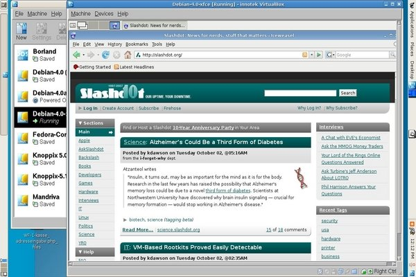
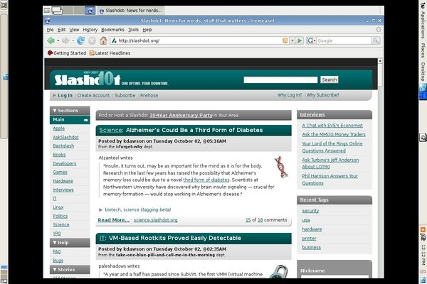
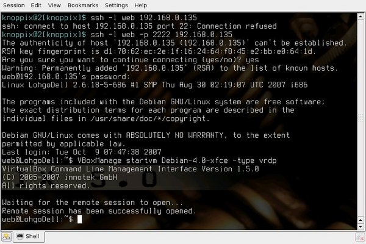
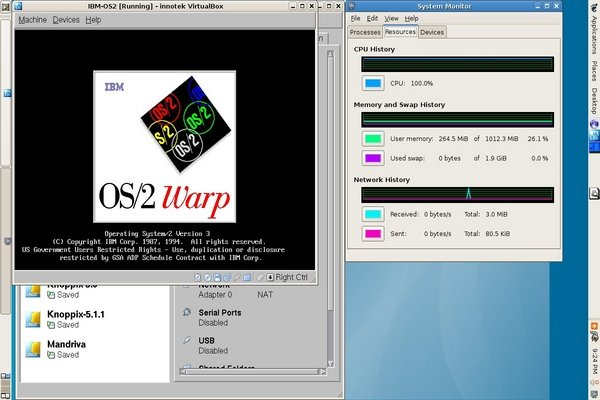

Virtualization made Easy
By Edgar Howell
Introduction
Recently, I finally found the time to check out something that had originally been brought to my attention by an announcement in a local publication early this year: Innotek's VirtualBox. In short, this is an outstanding product that deserves consideration by anybody in any way interested in virtualization.
Background
For a very long time, VMWare has been the name in virtualization. A year or so ago, I played with their VMPlayer and what it could do was very impressive, but an OS under it was noticeably slower than natively on hardware. My understanding was that it could emulate any environment, but at a considerable price.
Xen has been the "other" contender for a while. When I was experimenting with it, it seemed to address only servers. And required modifications to both operating systems involved.
VirtualBox, as I understand it, is in a sense between the two. Ignoring the optional "guest additions", it needs no alteration to either OS. Rather, it provides a layer of software that makes available one particular machine configuration and can trap "dangerous" instructions and patch them on-the-fly such that the OS in the VM can execute without prior modification. Due to the patching, this only needs to be done once. In my experience, this seems to work quite well.
Terminology
Typically, the term "host" refers to a combination of an
operating system and a PC or other computer (i.e., software + hardware),
as in the name of a GNU/Linux host in a network.
But in the context of virtualization:
•
"host" is the OS immediately interacting with the hardware
under which, in this case, VirtualBox has been installed;
•
"guest" is the OS installed in this environment and
accessing the virtual hardware made available by VirtualBox
running under control of the host.
The VirtualBox documentation talks about 2 states, "powered off" and "saved".
This is a simplification
that might cause some grief for those not used to dual-boot:
•
"Saved" is likely the state of greatest interest.
When you tell VirtualBox to save the machine state,
it is much like making use of the swap partition
to save the current state of an OS to speed up later re-boot after shutdown.
•
"Powered off" has precisely the same effect as
pulling the power plug on hardware:
buffers will not be flushed, you almost certainly will lose data,
on re-boot you will go through the fsck procedure.
This may make sense in some situations as when you so mess up
an installation that you want to start over anyhow.
On those -- likely rare -- occasions when you do not want to save the current machine state of the guest OS, in all probability, you will want to use the shutdown you would use normally, whether via GUI or root: "shutdown -h now". This leads to the state "powered off", but without loss of data.
Installation
This is professional-quality software with corresponding documentation. Installation is extremely straight-forward. This is true of both VirtualBox itself and installing virtual machines under it. It works as described in the documentation, and is quite easy to use. No need for comments, other than that you should be sure to allow enough room in the partition where the host resides.
Here are some statistics from a notebook:
Host partitions:
Filesystem 1K-blocks Used Available Use% Mounted on /dev/sda12 27774776 21330516 5033356 81% / tmpfs 518276 0 518276 0% /lib/init/rw udev 10240 116 10124 2% /dev tmpfs 518276 0 518276 0% /dev/shm /dev/sda9 4814936 109892 4460456 3% /shareEXT2 total 14488176
Guest machines available in the root partition:
-rw------- 1 web web 13634048 2007-09-06 11:30 Borland.vdi -rw------- 1 web web 1844457984 2007-09-18 10:50 Debian-4.0a.vdi -rw------- 1 web web 2926592512 2007-09-13 17:17 Debian-4.0.vdi -rw------- 1 web web 2346725888 2007-09-26 14:19 Debian-4.0-xfce.vdi -rw------- 1 web web 2905618944 2007-09-08 20:36 Fedora-Core-6.vdi -rw------- 1 web web 12800 2007-09-09 08:08 Knoppix-5.1.1.vdi -rw------- 1 web web 2422223360 2007-09-05 12:04 Kubuntu.vdi -rw------- 1 web web 2775593472 2007-09-10 12:58 Mandriva.vdi
By the way, the above are just "virtual drives" and do not reflect, for example, the Debian Xfce and Knoppix ISO's also taking up space in an almost 30GB partition. Based on past experience I gave each machine 3GB to be used dynamically as needed, not taken and formatted up front.
A Debian Example
Here are a couple of screen-shots of an XFCE-based Debian installation under VirtualBox.
This is what the display shows after using a VM as it is started by VirtualBox.

You can see a bit of the VirtualBox window, the Debian guest itself, and to the extreme left and right the task bars of the Debian host, which I moved there only because of the proportions of the notebook display.
And here it is full-screen.

Not a great deal of difference: on a notebook at least, full-screen doesn't do much more than hide everything other than the VM of interest and the task bars of the host. In particular, the VirtualBox task bar with the buttons to shut down the VM are no longer visible.
Guest Additions
The so-called "Guest Additions" install code in the guest OS to enhance behavior. Innotek recommends installing them, and I concur.
The major enhancements are:
•
Coordination of time on VM and host
While there is no absolute necessity of having the VM reflect the
correct time of day -- indeed, the IBM-DOS/Borland VM shown
on the VirtualBox window in the first screen-shot above
can't even display the correct year! -- this seems desirable.
•
Sharing directories between VM and host
The VirtualBox documentation refers to "shared folders", but they are
directories and very useful if you need to move any data from one
environment to another.
•
Elimination of "mouse capture"
Natively a VirtualBox VM will not let the mouse move the cursor
outside of the area it occupies on the display.
If you have more than one VM active on the display at one time,
this can be a feature (overridden with the "host" key as documented).
I prefer to use the workspaces or desktops or whatever the dickens
the GUI-VTs are called to house the one or two VMs simultaneously active
(as on the bottom part of the left-most Debian host task bar, above).
Remote Access
Remote access is very easy, and could be a way of obtaining lots more use from old notebooks or PCs. All you really need is a host machine with enough power to support a couple of users, pretty much any PC by now. You can either start a virtual machine via the GUI on the host or use ssh -- you need remote access anyhow -- as in the following from a PC under Knoppix via the LAN to the notebook:

Once the virtual machine is running (a matter of a few seconds, if it had previously been ended with "save state"), you can logon to it with the command seen in the tiny window at the bottom:

At this point, response times are only limited by the network. Internet access is available if the VM has it via the host. The only caveat is that it is very easy to forget to shut down the VM properly; terminating all connections to the VM without doing this leads to the state "aborted", possible loss of data, and the inevitable fsck delay on re-boot.
Security
With no claim to expertise in security matters I hesitate to offer suggestions, only the following comments.
To the extent one trusts Innotek or has looked at the source code, VirtualBox seems to improve security. With NAT to the outside world it should only recognize responses -- no connection requests -- from outside the host; pretty much the behavior of a paranoid firewall.
Since VirtualBox supports snapshots, once set up it is possible to re-boot the virtual machine from a snapshot, thereby eliminating any possible changes to the environment about as effectively as using a live CD such as Knoppix to browse the Internet.
To further improve security one can remove lots of software from the host. After all, it is only functioning as an intermediary, doesn't really need a browser, for example.
However, keep in mind the reason that IP-Cop refuses to share a hard disk with any other OS: the more software on the hardware, the greater the risk of failure somewhere.
And if someone somehow should be able to break into your host with sufficient privileges, he could easily send himself all of your VM's to be looked at off-line at his leisure!
As usual, your call.
Use in Practice
Since initially installing VirtualBox with a Debian 4.0 host and among others a Debian 4.0 guest early in August, I have done easily 80 - 90% of my Internet access in this environment on a notebook. On rare occasion there has been disk I/O that the host attributed to VirtualBox, sometimes going on for a minute or more. But the "Internet experience" hasn't been noticeably impacted. I am still happy with response times for access to BBC and CNN.
The bit of Internet I have been doing outside of this environment is with Mandriva booted natively from another partition for e-mail. It quite literally was trivial to copy my bookmarks from Firefox there to the "shared folder" partition and then from there into the Iceweasel (Debian, don't ask) directory in a VM. And across the network to the other machine, of course.
For what it is worth, the "Borland" guest seen in the VirtualBox window above was created with floppy disks on a PC and sent over the LAN to the notebook which has no floppy drive!
Hearsay
Shortly after starting to experiment with VirtualBox, I mentioned it to a colleague who had begun to try Linux out. Recently he said that it worked well under Wimp/OS, where he has been playing with Ubuntu and Knoppix.
He pointed out that once the Guest Additions had been installed, time co-ordination is less costly than under VMWare (which he has been using for quite some time) where this is supposed to be a known issue.
Perhaps more interesting, he mentioned that RealPlayer under VirtualBox retains synchronization between sound and film.
Futures
Among the things VirtualBox supports
but which I haven't had a chance to investigate are:
•
Bridge on host at the same time as NAT
VirtualBox shows 4 network adapters available.
So it should be possible to connect the guest to the LAN
in addition to its use of NAT to take advantage of whatever
connectivity the host has.
•
CUPS to a network printer
Likely related, it would be very useful to be able to access
a network printer.
•
Access to USB
This is available, just described as dangerous, for obvious reasons,
and thus not high on my priority list.
•
Remote access to USB
Again, available, and should be quite useful in the appropriate
environment but at the moment shared folders are sufficient (and see above).
Guest Problems
The command 'df' doesn't work with shared folders. This is really minor since the needed information can be obtained from the host.
vi can't write to a shared directory without error message, seems to work but not to be trusted (write error in swap file). It can change a file to zero length. I now copy a file locally for modification and then copy it back to make it available to other environments.
cp works EXT2-to-EXT2 but not EXT2-to-DOS. It isn't clear whether this is even a bug. Who uses DOS?
Under Mozilla <Ctrl>+ doesn't increase font size but using the mouse View|Text size|Increase is OK. And <Alt>-VZI works, so what is there to complain about?
Pros and Cons
Using snapshots you can produce "checkpoints" with which to recover from experiments -- teach yourself by trial-and-error at your own pace.
Shared folders can be extremely confusing, particularly after re-boot of guest or host, at least during testing. Re-boot of the host requires that the device subsequently be mounted on the mount-point again if not done permanently on the host in /etc/fstab. On re-boot of the guest if a shared folder was defined with the parameter "-transient" it will have to be defined again on the host and subsequently mounted on the guest. Adding it to /etc/fstab on the guest works fine, as long as "-transient" wasn't used on the host. In short: avoid "-transient".
The VirtualBox title bar on the VM pushes the "screen" down too far to get to Debian's "bottom" task bar. This is restored by full-screen mode. Full-screen mode makes more sense anyhow, unless you insist on several virtual machines on one physical display -- in which case, good luck!
On the notebook, at least, full-screen mode merely hides the VirtualBox framework; it doesn't increase the size of the window (VirtualBox seems to retain length and width ratio of display). Is this a bug or a feature?
The VBoxManage reference is very nice but it would be far nicer if the sub-commands were repeated where the command is discussed -- that would avoid much paging back and forth.
As good as it is, VirtualBox is not the perfect test-bed in all cases. Due to the one machine configuration it makes available to a VM, some possibilities are precluded. For example, both the notebook and PC used here have WLAN access to the Internet. But the NAT of VirtualBox effectively turns the host into a firewall. From a VM there is no way to learn how to manage a WLAN, how to establish a connection with the access point.
Apparently there are situations where VirtualBox fails miserably. Fedora Core 2 on both PC and Notebook was so outrageously slow that it is totally worthless, both during installation and afterwards. Yeah, I know -- look at the screen-shot -- FC 6 is OK and who would want to use 2. But something can really screw response times up.
And not every attempt to create a virtual machine was successful. Perhaps I just didn't have enough patience, but when the system monitor shows the CPU pegged over a considerable period of time and "ps aux" verifies it in a VT on the host...

A Non-VirtualBox VM
As mentioned above this package has several other features that I haven't been able to check out just yet. But the ability to use VMs from another environment seemed very interesting. So I found a VM on the Internet that had been produced with VMWare.
After unzipping the file and moving the VMDK into the VDI directory and defining a VM with it as virtual drive, this is what resulted:

Subjective Evaluation
VirtualBox has vastly exceeded any expectations I might have had. Indeed, there are a few rough edges yet. But this is a very mature product, an outstanding sand-box in which to experiment and learn.
It would be very interesting to hear about experience of hard-core gamers and people wanting to consolidate servers.
In any case to my mind there is no reason for anybody to be afraid of testing the Linux water, be it someone interested in a different flavor of Linux or considering changing other loyalties risk-free.
Talkback: Discuss this article with The Answer Gang
(Note: mail that does not contain "linuxgazette" in the subject will be
rejected.)
 Edgar is a consultant in the Cologne/Bonn area in Germany.
His day job involves helping a customer with payroll, maintaining
ancient IBM Assembler programs, some occasional COBOL, and
otherwise using QMF, PL/1 and DB/2 under MVS.
Edgar is a consultant in the Cologne/Bonn area in Germany.
His day job involves helping a customer with payroll, maintaining
ancient IBM Assembler programs, some occasional COBOL, and
otherwise using QMF, PL/1 and DB/2 under MVS.